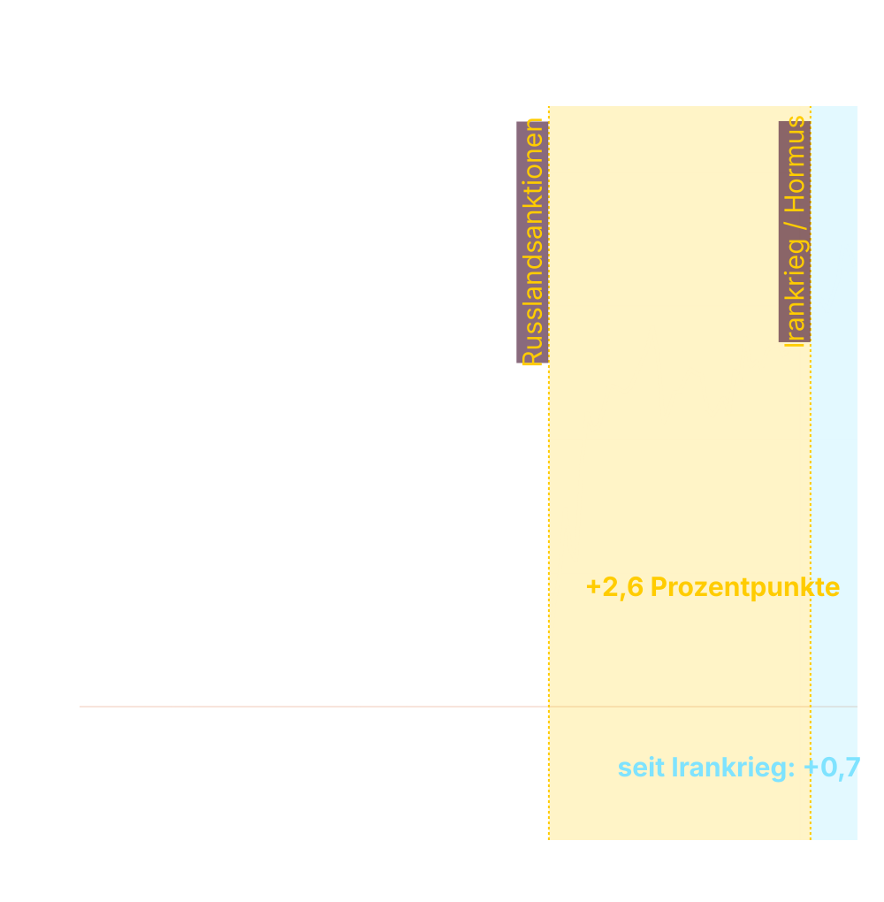
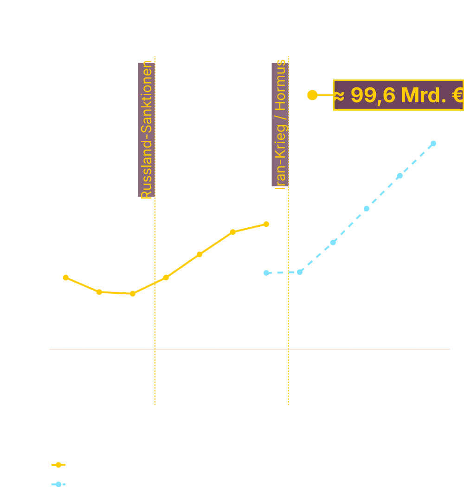

≈ 99,6 Mrd. €
Zinsen pro Jahr – woher kommt das?
Und stimmt die Erklärung der Bundesregierung, der Iran-Krieg habe die Zinsen getrieben?
Die Antwort in vier Folien.
Datenstand: 17. November 2026
1 · Die offizielle Begründung
„Der Anstieg der Zinsausgaben ist wesentlich auf den erhöhten Schuldenstand sowie auf gestiegene Renditen für Bundeswertpapiere zurückzuführen, die sich aufgrund des Irankriegs und der damit gestiegenen Inflation bzw. Inflationserwartung erhöht haben.“
Finanzplan des Bundes 2026–2030, Abschnitt 4.4.1 Zinsausgaben – Deutscher Bundestag, Drucksache 21/7301, S. 40.
2 · Die Kosten der Schulden
Der große Sprung kam 2022

Die Rendite der 10-jährigen Bundesanleihe ist der Zins, zu dem sich der Bund neues Geld leiht.
Russlandsanktionen 2022 bis Irankrieg 2026: von 0,06 % (1.3.2022) auf 2,69 % (27.2.2026) = +2,6 Prozentpunkte
Seit dem Irankrieg: von 2,69 % auf 3,35 % (17.11.2026) = +0,7 Prozentpunkte
Rund viermal so viel wie seit dem Irankrieg. Was bedeutet das in Euro?
Deutsche Bundesbank: Tagesrendite an den Stichtagen, Diagramm mit Monatsmittel.
3 · Die Zinslast
Fast 100 Milliarden Euro Zinsen pro Jahr

≈ 99,6 Mrd. €
pro Jahr – so viel kostete der gesamte Schuldenstand zum Zins der Bundesanleihe vom 17.11.2026.
Russlandsanktionen 2022 bis Irankrieg 2026: +75 Milliarden – von 1,5 Mrd. € (1.3.2022) auf 76,9 Mrd. € (27.2.2026).
Gezahlt wird mit Verzögerung, weil alte Anleihen erst nach und nach ersetzt werden. Wie stehen andere Länder da?
Modell: Schuldenstand × Rendite der Bundesanleihe; Stichtage mit Tagesrendite, Diagramm mit Monatsmittel.
4 · Zum Vergleich: Frankreich und Italien
Frankreich und Italien trifft es noch härter

| Schulden | Rendite | Zinslast | 20–59 J. | je Person |
|---|
| Deutschland | 2,85 Bio. € | 3,42 % | 97 Mrd. € | 42,5 Mio. | 2.290 € |
|---|
| Frankreich | 3,46 Bio. € | 4,89 % | 169 Mrd. € | 33,8 Mio. | 5.000 € |
|---|
| Italien | 3,10 Bio. € | 4,68 % | 145 Mrd. € | 30,0 Mio. | 4.840 € |
|---|
Für jeden Menschen zwischen 20 und 59 Jahren entspricht das pro Jahr: Frankreich ≈ 5.000 €, Italien ≈ 4.840 €, Deutschland ≈ 2.290 €.
Das Geld für Zinsen fehlt nicht nur im Haushalt. Es fehlt für Investitionen – das bremst Nachfrage und Wachstum. Doch genau dieses Wachstum bräuchten wir, um die Zinsen zu erwirtschaften.
Gleiche Rechnung für alle drei Länder: Schulden Ende 2025 × Rendite Okt. 2026 (Eurostat) – daher 97 statt 99,6 Mrd. € für Deutschland. 20- bis 59-Jährige: demo_pjangroup.